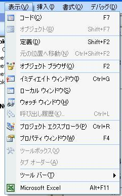
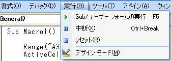

第2回.セルに文字を入れる
前回の復習、ちゃんとやりましたか（笑）
もう一度だけ書きます、これでお終いです、覚えて下さい。
・マクロの記録 2003なら、「ツール」→「マクロ」→「新しいマクロの記録」 2007以降、「開発」→「マクロの記録」 |
・マクロの実行 2003なら、「ツール」→「マクロ」→「マクロ」 2007以降、「開発」→「マクロ」 ショートカットは、Alt+F8です。 |
・マクロの内容 2003なら、「ツール」→「マクロ」→「Visual Basic Editor」 2007以降、「開発」→「Visual Basic」 ショートカットはAlt+F11です。 |
・コードの表示 「表示」→「コード」 ショートカットはF7 または、ダブルクリック |
では、前回作成したマクロの中身をみてみましょう。
Sub Macro1()
'
' Macro1 Macro
'
'
ActiveCell.FormulaR1C1 =
"マクロの記録で覚えるVBA"
ActiveCell.Characters(5, 2).PhoneticCharacters =
"キロク"
ActiveCell.Characters(8, 1).PhoneticCharacters = "オボ"
Range("A2").Select
End
Sub
あっ前回、私はコピペしたので、読みの部分は抜けていました。
Sub Macro1()
・・・
End Sub
これが、マクロの１かたまり、つまり１つのマクロになります。
Subって何？・・・その疑問もっともです。
これ、サブプロシージャー(Sub Procedure)って言います。
直訳すると、「副手順」かなー（笑）
そんな事は、気にしなくていいです。
とにかく、これで１つのマクロになるってことです。
Macro1がこのマクロの名前です。
先頭の「'」
気になりますねー。
これは、コメントです。
「'」より後ろは、コメントとして、VBAとしての実行には影響がありません。
行の途中からでも、「'」の後ろはコメントになります。
マクロ作成した時に、覚書で「'」の後に書いておくと、後で見た時に助かります。
マクロの記録で作成されたコメントは、
Macro1というMacroですってことですね、意味無いね（笑）
ActiveCell.FormulaR1C1 = "マクロの記録で覚えるVBA"
まず、「.」は、「の」と考えましょう。
つまり、
ActiveCellのFormulaR1C1
ってことですね。
そして、「=」は、左辺と右辺を「イコール」にするって事です。
つまりは、右辺を左辺に入れるということです。
ですから、「=」は、「←」と考えましょう。
そうすると、結局は、
ActiveCellのFormulaR1C1 ← "マクロの記録で覚えるVBA"
ということです、つまり、
ActiveCellのFormulaR1C1に"マクロの記録で覚えるVBA"を入れる。
になります。
やったー、どうです、解っちゃったかな。
えっ、ActiveCellとFormulaR1C1って何かって・・・
今から説明します。
ActiveCell
直訳すれば、「アクティブセル」ですね。
えっ訳して無い・・・アクティブはアクティブだし、セルはセルとしか・・・
いや、だって、マジに訳したら、「活動的な細胞」・・・余計に解んないでしょ。
まあ、選択されているセルです。
セルをクリックすると、四辺が太くなりますよね、そうなっているセルの事です。
FormulaR1C1
直訳すれば、「式R1C1」・・・直訳は止めましょう、余計に混乱するから。
このR1C1については、計算式を入れる時に説明します。
今は、無視しておきましょう。
ActiveCell.Characters(5, 2).PhoneticCharacters = "キロク"
ActiveCell.Characters(8, 1).PhoneticCharacters = "オボ"
この２行は、完全に無視しましょう。
エクセルでは、漢字の読みをデータとして持っているので、
それが記録されたものです。
これを使うのは、もっとVBAを覚えてからにしましょう。
Range("A2").Select
A2は、A列2行目のセルです、そして、その範囲と言う事になります。
この場合は、範囲といっても、１つのセルだけですけどね。
上で、「.」は、「の」と考えましょう、と言いましたが、
この場合は、「.」は、「を」と考えます。
つまり、
Range("A2")をSelect
ですから、A2セルを選択するってことです。
そして、このSelectで、そのセルがアクティブになります。
つまり、この後は、
ActiveCellは、セルA2になります。
「.」が、「の」なのか「を」なのかの違い
「.」の後ろが動詞で、その後ろには何もない場合は「を」です。
「.」の後ろが名詞や形容詞で、その後ろに「=」がある場合は、「の」になります。
つまり、
○○○.△△△は、○○○を△△△する
○○○.△△△ = □□□は、○○○の△△△に□□□を入れる
ってことです、理解できましたか。
まあ、やってるうちに覚えてしまいます。
今回のマクロで解った事は、
セルに文字を入れる場合は、
Range("列行").Select
ActiveCellとFormulaR1C1 = "入れたい文字列"
で良いと言う事ですね。
では、Macro1()の中身を直してみましょう。
Sub Macro1()
Range("A3").Select
ActiveCell.FormulaR1C1 =
"マクロを書いたぞ！"
End Sub
先頭が、「'」のコメント行は消しました。
上のように直して、マクロを実行してみましょう。
エクセルに戻るには、「表示」→「Microsoft Excel」、ショートカットは、Alt+F11

まあ、Windowsのタスクバーで移動した方が解り易いかもしれません。
戻ったら、マクロの実行をして下さい。
マクロの実行は、一番最初に記載しましたので大丈夫ですね。
はい、これで、セルA3に、「マクロを書いたぞ！」と表示されました。
マクロの実行の別のやり方
エクセルに戻って、マクロの実行をしましたが、
マクロを書いて、その場で直ぐに実行する事が出来ます。

「実行」→「Sub/ユーザーフォームの実行」、ショートカットはF5です。
ただし、Sub～End Subの間のどこかを、入力カーソル（縦棒）がなければいけません。
または、「表示」→「ツールバー」→「標準」
でツールバーを表示して、
この中の、 になります。
まあ、F5が一番早いので、F5で慣れると良いでしょう。
とりあえず、文字を入れる事はできました。
でも、たかが文字をいれるだけで、２行も３行も書く必要があるのって思いませんか。
だって、それなら、マクロなんか使わずに、手作業の方が早いですからね。
ということで、次回は、もっと簡単に文字を入れる方法を紹介します。
|
「.」が、「の」なのか「を」なのかの違い 「.」の後ろが名詞や形容詞で、その後ろに「=」がある場合は、「の」になります。 「.」の後ろが動詞で、その後ろには何もない場合は「を」です。 つまり、 ○○○.△△△は、○○○を△△△する ○○○.△△△ = □□□は、○○○の△△△に□□□を入れる |
とりあえず今回は、これだけ覚えましょう！
同じテーマ「マクロの記録でVBA」の記事
マクロの記録で覚えるVBA
第1回.マクロを記録して実行
第2回.セルに文字を入れる
第3回.複数セルに文字を入れる
第4回.連続数値を入れる
第5回.100マスに数値を入れる
第6回.別のシートにコピーする
第7回.別のシートにコピーする2
第8回.計算式を入れる
第9回.計算式をコピーする
第10回.計算結果を入れる
新着記事NEW ・・・新着記事一覧を見る
VBA100本ノック 100本目：WEBから100本ノックのリストを取得｜VBA練習問題（3月3日）
VBA100本ノック 99本目：自動席替え（行列と前後左右が全て違うように）｜VBA練習問題（3月2日）
VBA100本ノック 98本目：席替えルールが守られているか確認｜VBA練習問題（3月1日）
VBA100本ノック 97本目：Accessデータを取得（グループ集計）｜VBA練習問題（2月27日）
VBA100本ノック 96本目：Accessデータを取得（マスタ結合&抽出）｜VBA練習問題（2月26日）
VBA100本ノック 95本目：図形のテキストを検索するフォーム作成｜VBA練習問題（2月24日）
VBA100本ノック 94本目：表範囲からHTMLのtableタグを作成｜VBA練習問題（2月23日）
VBA100本ノック 93本目：複数ブックを連結して再分割｜VBA練習問題（2月22日）
VBA100本ノック 92本目：セルの色を16進で返す関数｜VBA練習問題（2月20日）
VBA100本ノック 91本目：時間計算（残業時間の月間合計）｜VBA練習問題（2月19日）
アクセスランキング ・・・ ランキング一覧を見る
1.最終行の取得（End,Rows.Count）｜VBA入門
2.RangeとCellsの使い方｜VBA入門
3.変数宣言のDimとデータ型｜VBA入門
4.マクロって何？VBAって何？｜VBA入門
5.Range以外の指定方法（Cells,Rows,Columns）｜VBA入門
6.セルのコピー&値の貼り付け（PasteSpecial）｜VBA入門
7.繰り返し処理（For Next)｜VBA入門
8.セルに文字を入れるとは（Range,Value）｜VBA入門
9.マクロはどこに書くの（VBEの起動）｜VBA入門
10.とにかく書いてみよう（Sub,End Sub）｜VBA入門
- ホーム
- マクロVBA入門編
- マクロの記録でVBA
- セルに文字を入れる
このサイトがお役に立ちましたら「シェア」「Bookmark」をお願いいたします。
記述には細心の注意をしたつもりですが、
間違いやご指摘がありましたら、「お問い合わせ」からお知らせいただけると幸いです。
掲載のVBAコードは動作を保証するものではなく、あくまでVBA学習のサンプルとして掲載しています。
掲載のVBAコードは自己責任でご使用ください。万一データ破損等の損害が発生しても責任は負いません。